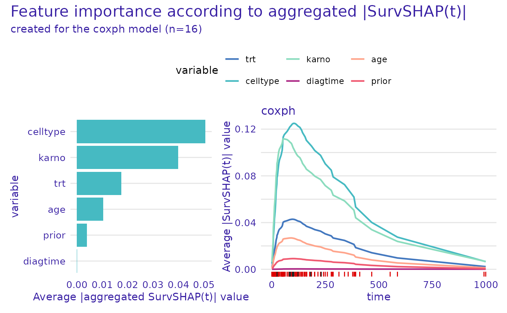
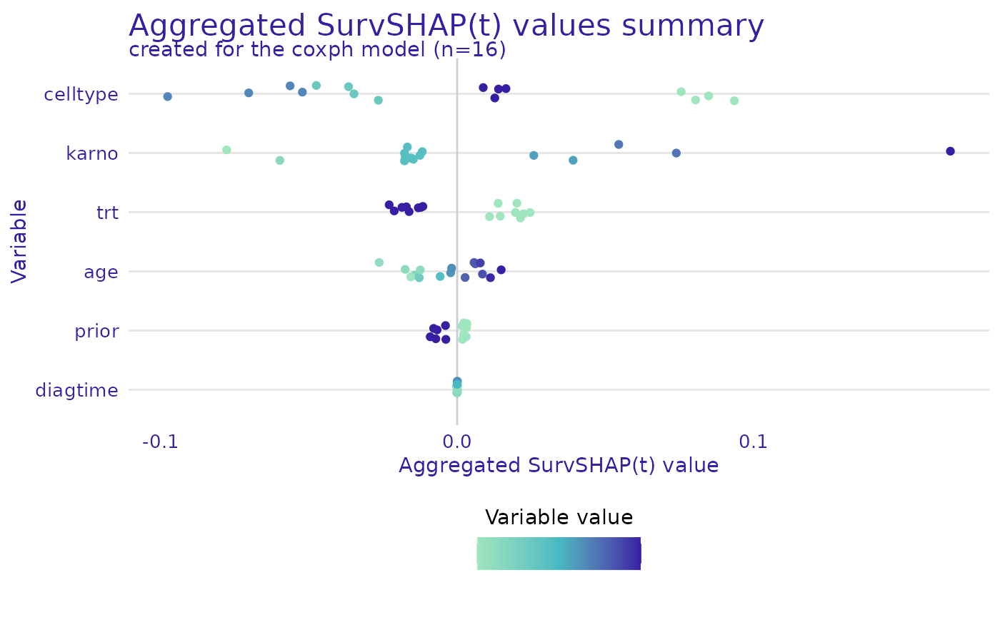

This vignette demonstrates how to use the
model_survshap() function can be used to calculate global
explanations for survival models. These explanations can be used to
assess variable importance, and can be plotted in different ways to
focus on different aspects.
To create this explanation we follow the standard way of working with survex i.e. we create a model, and an explainer.
library(survex)
library(survival)
library(ranger)
vet <- survival::veteran
cph <- coxph(Surv(time, status) ~ ., data = vet, x = TRUE, model = TRUE)
exp <- explain(cph, data = vet[, -c(3,4)], y = Surv(vet$time, vet$status))
#> Preparation of a new explainer is initiated
#> -> model label : coxph ( default )
#> -> data : 137 rows 6 cols
#> -> target variable : 137 values ( 128 events and 9 censored )
#> -> times : 50 unique time points , min = 1.5 , median survival time = 80 , max = 999
#> -> times : ( generated from y as uniformly distributed survival quantiles based on Kaplan-Meier estimator )
#> -> predict function : predict.coxph with type = 'risk' will be used ( default )
#> -> predict survival function : predictSurvProb.coxph will be used ( default )
#> -> predict cumulative hazard function : -log(predict_survival_function) will be used ( default )
#> -> model_info : package survival , ver. 3.5.5 , task survival ( default )
#> A new explainer has been created!We use the explainer and the model_survshap() function
to calculate SurvSHAP(t) explanations. We can specify the observations
for which we want to calculate the explanations. In this example we
calculate the explanations for the first 20 observations in the veteran
dataset. Note: The background for generating SHAP
values is the data field of the explainer! If you want to
calculate explanations with a background that is not the training data,
you need to manually specify the data argument, when
creating the explainer.
shap <- model_survshap(exp, veteran[c(1:4, 17:20, 110:113, 126:129), -c(3,4)])We plot these explanations using the
plot.aggregated_surv_shap() function. By default the plot
features 2 panels, the one on the left depicts overall importance of
variables. The panel on the right demonstrates the time-dependent
importance of each variable calculated as the mean absolute SHAP value
at each time point across all observations.
plot(shap)
The plot.aggregated_surv_shap() function can also be
used to plot the explanations for a single variable. The
variable argument specifies the variable for which the
explanations are plotted. The geom argument specifies the
type of plot. For geom = "profile" a plot is generated that
shows the mean SHAP value (averaged across the time domain) depending on
the value of the variable.
plot(shap, variable = "karno", geom = "profile")
#> Warning in plot_shap_global_profile(x = x, ... = ..., title = title, subtitle =
#> subtitle, : `color_variable` was not specified, the first from the result will
#> be used.For geom = "beeswarm" a bee swarm plot is generated that
shows the SHAP values for each observation. The swarm plot is a good way
to assess the distribution of SHAP values for each variable.
plot(shap, geom = "beeswarm")